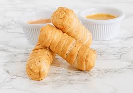

The Delicous Tequeños
Tequeños are a popular Venezuelan appetizer. They are cheese sticks wrapped in a thin dough and then fried until golden brown.

- 1 cup mozzarella cheese, cut into sticks
- 1 cup all-purpose flour
- 1/2 cup water
- Pinch of salt
- Oil for frying
- Wrap cheese sticks in dough
- Fry until golden brown
- Enjoy the crispy Tequeños